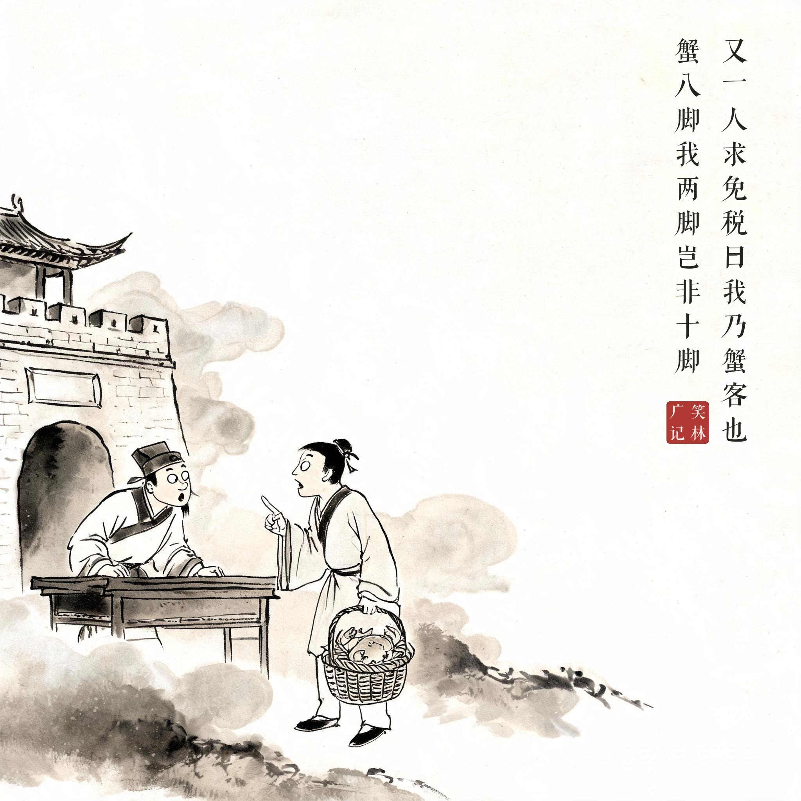
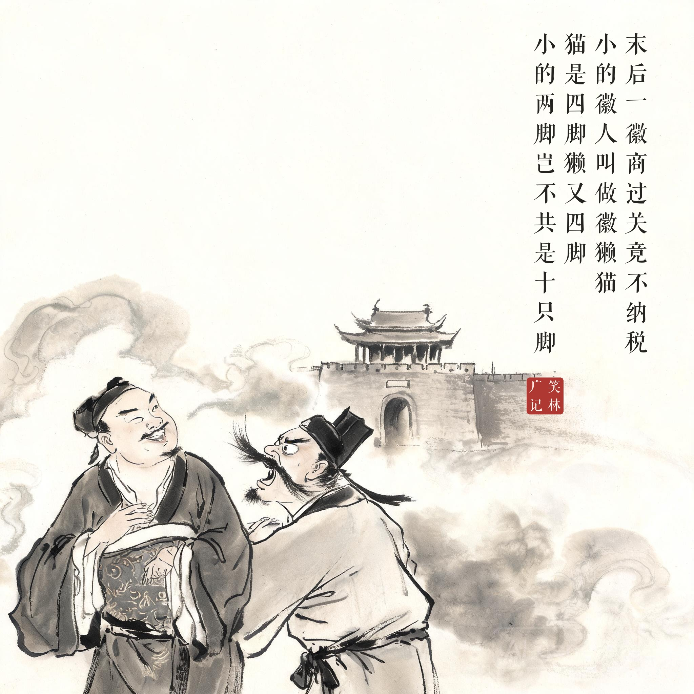

《笑林广记 · 讥刺部》（[清]游戏主人纂集）
关吏缺课，凡空身人过关，亦要纳税，若生十只脚者免。初一人过关无钞，曰："我浙江龙游人也。龙是四脚，牛是四脚，人两脚，岂非十脚？"许之。又一人求免税曰："我乃蟹客也。蟹八脚，我两脚，岂非十脚？"亦免之。末后一徽商过关，竟不纳税。关吏怒欲责之，答曰："小的虽是两脚，其实身上之脚还有八只。"官问："那里？"答曰："小的徽人，叫做徽獭猫。猫是四脚，獭又四脚，小的两脚，岂不共是十只脚？"
关卡缺税，空手人过关也要纳税，长了十只脚的免。头一个过关的说："我是浙江龙游人。龙四只脚，牛四只脚，我人两只脚，凑起来正好十只。"放行。第二个说："我是贩蟹的。蟹八只脚，我两只脚，正好十只。"也放行。最后来个徽州商人，干脆不交税。关吏发怒要罚，他说："小人虽是两只脚，其实身上还长着八只——我是徽州人，叫做徽獭猫。猫四只脚，獭四只脚，我两只脚，合计正好十只。"
规则被玩成了接龙——从龙游人到蟹客再到徽獭猫，税务漏洞是全人类共同的事业，连"徽"字都入了账。